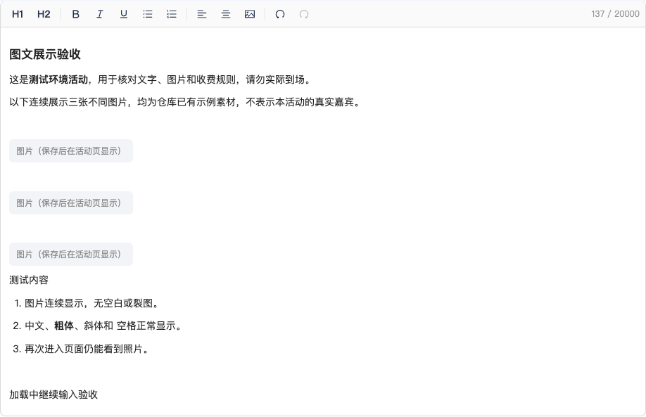
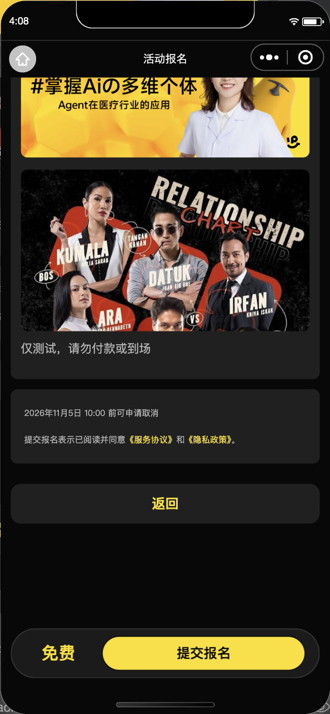

← 返回同一份验收报告后台活动图片：上传、保存、重开、手机预览与小程序
2026-10-20 · 同一需求v1草稿反馈补充 · TEST实际上传，PRODUCTION只读业务回查
同一份介绍：加载过程中继续打字
1440×900真实浏览器、同一TEST活动、相同输入操作。截图为原始编辑器元素：显示图片后元素自然增高，非等高像素对照。为稳定复现，自动化仅延迟只读签名响应；服务端真实返回成功及非空地址。
修改前地址成功返回，图片仍停在占位。

原型与范围这是图片加载功能修复，没有新增视觉布局或对应新原型；沿用既有后台编辑器。
另以浏览器时钟推进8分钟，观察实际HTTPS续签请求，六图仍显示；失败重试、取消与会话隔离有自动化回归。
无手机本地临时路径入库；不会将预览签名地址当作稳定引用保存。
真实上传、保存后关闭页面，再打开
测试活动：后台三栏上传验收。每栏同时选择2张仓库既有示例图片，不代表真实嘉宾；请勿到场或付款。
后台手机预览：三个Tab
Web截图按浏览器America/New_York时区显示，小程序按北京时间显示；对应同一UTC时刻，本项只验收图片，不作时间文案像素对照。
同一测试活动：小程序读取实际上传内容
390×844逻辑视口的微信开发工具实拍，使用真实TEST云数据；不是iPhone真机验收。三栏每栏2图，报名页须知2图。
报名确认页

生产早会只读确认：主办方确有3张图，后台3图都能加载；活动介绍与须知原本无插图。本轮未改生产活动内容、票价、订单或数据库。后台更新不需要重新上传小程序；此前1.0.3设为体验版及修复后iPhone真机仍待复核。